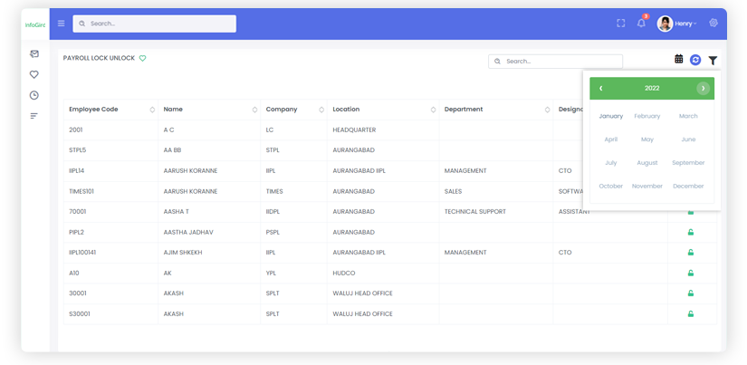

Our advanced attendance system offers flexible tracking, making it easy for organizations to monitor employee attendance in real time.


Flexible attendance system
With flexible options like Biometric, RFID, and Mobile Attendance, tracking attendance in real time is easy. Monitor early exits, late arrivals, overtime, and more.
Shift and Roster
A smart shift management system lets you assign shifts in advance, ensuring a seamless and automated allocation process.
Leave
A structured, customizable leave management system simplifies leave tracking. Get instant access to employee leave anytime, anywhere, at your convenience.